Provas Anteriores — 3ª Avaliação (3 versões resolvidas)
Transcrição fiel de três versões reais da 3ª Avaliação de COM06851,
cada uma com 8 questões sobre probabilidade discreta e comportamento assintótico, resolvidas do
zero com o protocolo Dados → Classificação → Estratégia → Resolução → Pontos de atenção.
Sobre esta página. As três versões têm a mesma estrutura de 8 questões (mesmos temas,
mesma ordem), mas com valores numéricos diferentes — prática comum para dificultar cola entre alunos
sentados próximos. Uma das cópias originais estava preenchida à mão por um aluno (nota final 5,6/10, com
respostas riscadas e incompletas); essas respostas manuscritas não foram usadas como gabarito —
todas as soluções abaixo foram recalculadas do zero e conferidas (soma de probabilidades = 1, axiomas
de probabilidade, etc.). Os pontos onde o aluno errou ou riscou a resposta foram sinalizados abaixo com
❗ armadilha comum, pois são um forte indício do que costuma confundir
quem faz essa prova.
Versão A
A1. Três dados — soma igual a 7
(1 ponto) Três dados (não viciados) são lançados e os resultados obtidos são
anotados. Qual a probabilidade que a soma dos resultados obtidos seja exatamente 7?
Foto da prova original
💡 Dica rápida Dados são ORDENADOS (dado1, dado2, dado3 são diferentes entre si) — conte trincas ordenadas que somam 7, não combinações.
I. Dados Três dados de 6 faces, lançados de forma
independente; interessa a soma dos três valores.
II. Classificação Espaço equiprovável finito:
\(n(S)=6^3=216\) triplas ordenadas igualmente prováveis.
III. Estratégia Contar as triplas \((a,b,c)\), \(1\le
a,b,c\le6\), com \(a+b+c=7\). Substituindo \(a'=a-1\) etc., \(a'+b'+c'=4\) com \(0\le a',b',c'\le5\)
(o limite superior 5 nunca é violado pois \(4<6\)); o número de soluções é
\(\binom{4+2}{2}=\binom{6}{2}=15\).
IV. Resolução \(P(\text{soma}=7)=15/216=5/72\approx6,94\%\).
V. Pontos de atenção
❗ Dados são ordenados (dado 1, dado 2, dado 3 são
distinguíveis) — (1,2,4), (2,1,4), (4,1,2) etc. são triplas diferentes e todas contam. Tratar os dados
como indistinguíveis e contar "combinações" em vez de arranjos é o erro mais comum aqui.
Ver teoria no Módulo 2 →
No quadro
n(S) = 6³ = 216
a+b+c=7, 1≤a,b,c≤6 → 15 triplas
P = 15/216 = 5/72 ≈ 0,0694 = 6,94%
P(soma = 7) = 5/72 ≈ 6,94%
A2. Loteria Daily4 (Indiana)
(1 ponto) No estado norte-americano de Indiana, existe uma loteria chamada Daily4,
onde são sorteados 4 números de 0 a 9 (são permitidas repetições). O apostador marca quatro números no
seu cartão e pode escolher como jogar: em sequência (os números do apostador têm que ser iguais aos
números sorteados na mesma ordem) ou em lote (os números do apostador têm que ser iguais aos números
sorteados em qualquer ordem). a) Qual a probabilidade de uma sequência? b) Qual a probabilidade de um
lote se exatamente dois dos números sorteados forem iguais?
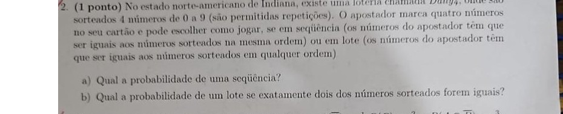
Foto da prova original
💡 Dica rápida "Sequência" = ordem exata (1 jeito só). "Lote" = ganha em qualquer ordem — conte quantos jeitos diferentes dá pra embaralhar os números sorteados.
I. Dados 4 dígitos sorteados de 0 a 9, com repetição
permitida e ordem relevante no sorteio: \(n(S)=10^4=10000\).
II. Classificação Espaço equiprovável de sequências
ordenadas; item (b) exige contar quantas sequências ordenadas correspondem a um lote (multiconjunto) com
o padrão "dois iguais e dois outros distintos entre si e do par".
III. Estratégia a) Uma sequência específica escolhida
pelo apostador corresponde a exatamente 1 dos 10000 resultados possíveis. b) Um lote com "exatamente dois
números iguais" tem o padrão de multiconjunto \(\{x,x,y,z\}\) com \(x,y,z\) distintos; o apostador ganha
se o sorteio for qualquer uma das permutações desse multiconjunto: \(4!/2!=12\) sequências ordenadas
equivalentes a esse lote.
IV. Resolução
a) \(P=\dfrac{1}{10000}=0,01\%\).
b) \(P=\dfrac{12}{10000}=\dfrac{3}{2500}=0,12\%\).
V. Pontos de atenção
❗ "Lote" não pergunta pela distribuição do sorteio em si, e sim pela
chance de o apostador acertar apostando em um lote com aquele padrão de repetição — por isso o
numerador é o número de permutações do multiconjunto apostado, não uma contagem de "quantos sorteios têm
exatamente um par". O aluno da versão manuscrita confundiu os dois tipos de contagem nesta questão.
Ver teoria no Módulo 2 (compare com a Loteria Daily3 da Lista) →
No quadro
n(S) = 10⁴ = 10000
a) P(sequência) = 1/10000 = 0,01%
b) lote {x,x,y,z}: 4!/2! = 12 sequências equivalentes
P = 12/10000 = 3/2500 = 0,12%
a) 1/10000 = 0,01% b) 3/2500 = 0,12%
A3. \(P(\bar A)=\tfrac12\), \(P(B)=\tfrac25\), \(P(A\cap\bar B)=\tfrac{3}{10}\)
(2 pontos) Suponha que A e B sejam eventos com \(P(\bar A)=1/2\), \(P(B)=2/5\) e
\(P(A\cap\bar B)=3/10\). Determine: a) Probabilidade que B não ocorra; b) Probabilidade que A e B ocorram;
c) Probabilidade que nem A e nem B ocorra; d) A e B são independentes? Justifique.
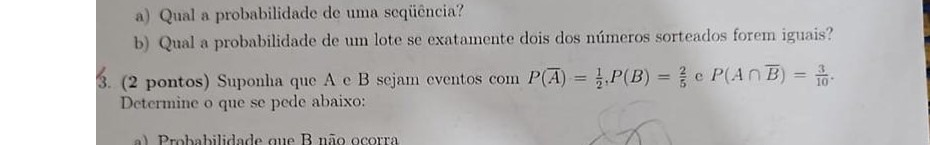
Foto da prova original
💡 Dica rápida Cuidado: o enunciado dá \(P(\bar A)\), não \(P(A)\)! Primeiro converta com \(P(A)=1-P(\bar A)\), só depois use a regra do "ou".
I. Dados \(P(A)=1-1/2=1/2\); \(P(B)=2/5\);
\(P(A\cap\bar B)=3/10\).
II. Classificação Álgebra de eventos com complemento e
princípio da adição — não é necessário espaço amostral explícito.
III. Estratégia Usar \(P(\bar B)=1-P(B)\); depois
\(A=(A\cap B)\cup(A\cap\bar B)\) (união disjunta) para isolar \(P(A\cap B)\); depois De Morgan
\(P(\bar A\cap\bar B)=1-P(A\cup B)\); por fim comparar \(P(A\cap B)\) com \(P(A)P(B)\).
IV. Resolução
a) \(P(\bar B)=1-2/5=3/5\).
b) \(P(A\cap B)=P(A)-P(A\cap\bar B)=1/2-3/10=5/10-3/10=2/10=1/5\).
c) \(P(A\cup B)=P(A)+P(B)-P(A\cap B)=1/2+2/5-1/5=5/10+4/10-2/10=7/10\); logo
\(P(\bar A\cap\bar B)=1-7/10=3/10\).
d) \(P(A)\cdot P(B)=\tfrac12\cdot\tfrac25=\tfrac{1}{5}=P(A\cap B)\) — iguais, logo A e B
são independentes.
V. Pontos de atenção
❗ O dado é \(P(\bar A)\), não \(P(A)\) — inverter essa conversão no
início derruba todos os itens seguintes. 🔁 \(A=(A\cap
B)\cup(A\cap\bar B)\) é sempre uma partição de A, então \(P(A\cap B)=P(A)-P(A\cap\bar B)\) é mais direto
aqui do que tentar montar inclusão-exclusão de outra forma.
Ver teoria no Módulo 3 →
No quadro
P(A) = 1 - 1/2 = 1/2
a) P(B̄) = 1 - 2/5 = 3/5 = 60%
b) P(A∩B) = 1/2 - 3/10 = 1/5 = 20%
c) P(A∪B) = 1/2+2/5-1/5 = 7/10 → P(nem) = 1-7/10 = 3/10 = 30%
d) P(A)P(B) = 1/2·2/5 = 1/5 = P(A∩B) → independentes: SIM
a) 3/5 b) 1/5 c) 3/10 d) Sim, A e B são independentes.
A4. Quatro moedas, sabendo que a 3ª é cara
(1 ponto) Quatro moedas usuais e não viciadas são lançadas. Sabe-se que o resultado
da terceira moeda foi cara (C). Nesse caso, qual a probabilidade de que o resultado obtido tenha
exatamente duas coroas (K)?
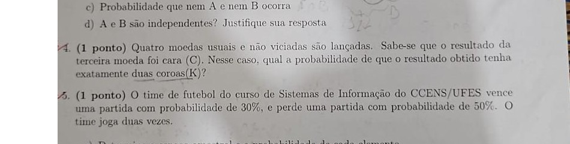
Foto da prova original
💡 Dica rápida "Sabendo que a 3ª moeda é cara" encolhe a caixa: fixe essa moeda em cara e conte só nas outras 3 livres.
I. Dados 4 moedas justas; condição: moeda 3 = cara.
Evento de interesse: exatamente 2 coroas entre as 4 (equivalente a exatamente 2 caras).
II. Classificação Probabilidade condicional com espaço
amostral reduzido: fixando a moeda 3 = C, restam 3 moedas livres, \(n(S')=2^3=8\) igualmente prováveis.
III. Estratégia Com a moeda 3 já cara, "exatamente duas
coroas no total" exige que, entre as outras 3 moedas, exatamente 1 seja coroa (a 3ª já não é coroa) —
ou equivalentemente, 1 seja cara e 2 sejam coroas... cuidado: "duas coroas" com a moeda 3 = cara
(não-coroa) exige que as 2 coroas estejam entre as outras 3 moedas.
IV. Resolução
moeda3 = C fixa → sobram moeda1, moeda2, moeda4 livres (ordem 1-2-4):
CCC, CCK, CKC, CKK, KCC, KCK, KKC, KKK → 8 sequências, \(n(S')=8\)
exatamente 2 K no total ⇒ exatamente 2 K entre as 3 livres: CKK, KCK,
KKC → 3 favoráveis
\(P=3/8=37,5\%\).
V. Pontos de atenção
❗ Condicionar em "moeda 3 = cara" reduz o espaço amostral de 16
para 8 — usar \(n(S)=16\) no denominador (esquecendo a condição) é o erro típico. Também é fácil trocar
"duas coroas entre as 4" por "duas coroas entre as 3 restantes" — releia com cuidado qual é o total
de coroas pedido.
Ver teoria no Módulo 4 →
No quadro
moeda3 = C fixa → n(S') = 2³ = 8
CCC CCK CKC CKK KCC KCK KKC KKK
2 K entre as 3 livres: CKK, KCK, KKC → 3
P = 3/8 = 0,375 = 37,5%
P(exatamente 2 coroas | 3ª é cara) = 3/8 = 37,5%
A5. Time de futebol — duas partidas
(1 ponto) O time de futebol do curso de Sistemas de Informação do CCENS/UFES vence
uma partida com probabilidade de 30%, e perde uma partida com probabilidade de 50%. O time joga duas
vezes. Qual a probabilidade do time vencer pelo menos uma das duas partidas?
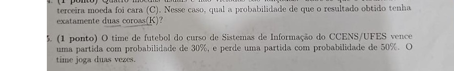
Foto da prova original
💡 Dica rápida "Pelo menos uma vitória em 2 jogos" — pense no contrário: a chance de perder OU empatar as duas vezes, e faça 1 menos isso.
I. Dados \(P(\text{vitória})=0,3\);
\(P(\text{derrota})=0,5\); logo \(P(\text{empate})=1-0,3-0,5=0,2\). Duas partidas, resultados
independentes.
II. Classificação Tentativas independentes repetidas;
"pelo menos uma vitória em duas" resolve-se mais rápido pelo complemento "nenhuma vitória".
III. Estratégia \(P(\text{não vence uma partida})=1-0,3=0,7\).
Por independência, \(P(\text{não vence nenhuma das duas})=0,7\times0,7=0,49\).
IV. Resolução
\(P(\text{vence pelo menos uma})=1-0,49=0,51\).
V. Pontos de atenção
❗ As probabilidades de vitória e derrota não somam 1 (30%+50%=80%);
os 20% restantes são empate, e "não vencer" inclui empate e derrota — não é apenas \(1-0,5=0,5\) (isso
seria "não perder"). 🔁 "Pelo menos um sucesso em n tentativas
independentes" = \(1-(1-p)^n\).
Ver teoria no Módulo 5 →
No quadro
P(V)=0,3 ; P(D)=0,5 ; P(E)=0,2
P(não vence) = 0,7
P(não vence nas 2) = 0,7² = 0,49
P(≥1 vitória) = 1-0,49 = 0,51 = 51%
P(vencer pelo menos uma das duas partidas) = 0,51 = 51%
A6. Prove o seguinte (O, Ω, Θ)
(1,5 ponto) Prove o seguinte: a) \(3n^3-4n+2\) é \(O(n^3)\); b) \(5n^2+n+3\) é
\(\Omega(n^2)\); c) \(\dfrac{n+1}{2}\) é \(\Theta(n)\).
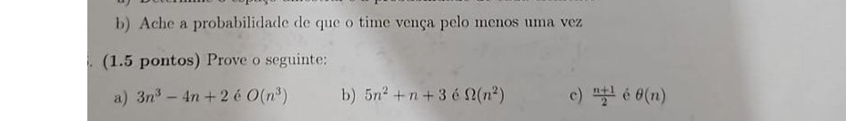
Foto da prova original
💡 Dica rápida Para O (teto): troque cada termo pequeno pela maior potência de n e some. Para Ω (chão): jogue fora os termos positivos extras.
I. Estratégia Em cada item, exibir constantes \(c>0\)
(ou \(c_1,c_2\)) e \(m\ge0\) explícitos que satisfaçam a definição formal, e verificar a desigualdade
algebricamente para \(n\ge m\) — provar O/Ω/Θ sempre significa exibir essas constantes, não apenas "sentir" que a ordem de grandeza bate.
II. Resolução a) \(O(n^3)\)
\(n\ge1\): \(3n^3-4n+2\le3n^3+2\) (descarta \(-4n\))
\(\le3n^3+2n^3=5n^3\) (pois \(2\le2n^3\))
→ \(c=5\), \(m=1\): \(3n^3-4n+2\le5n^3\) ✓ \(O(n^3)\).
III. Resolução b) \(\Omega(n^2)\)
\(n\ge0\): \(5n^2+n+3\ge5n^2\) (pois \(n+3\ge0\))
→ \(c=5\), \(m=0\) ✓ \(\Omega(n^2)\).
IV. Resolução c) \(\Theta(n)\)
Cota sup. (\(n\ge1\)): \(\dfrac{n+1}{2}\le\dfrac{n+n}{2}=n\) (pois \(1\le n\)) → \(c_1=1\)
Cota inf. (\(n\ge0\)): \(\dfrac{n+1}{2}\ge\dfrac{n}{2}\) → \(c_2=\tfrac12\)
→ \(m=1\): \(\tfrac12 n\le\dfrac{n+1}{2}\le n\) ✓ \(\Theta(n)\).
V. Pontos de atenção
❗ Θ exige provar as duas cotas (O e Ω) com o mesmo par
\((m,\) intervalo de validade\()\) — provar só a cota superior não basta para Θ.
🔁 Para polinômios, o termo de maior grau sempre domina; basta
majorar/minorar os termos de menor grau por múltiplos do termo dominante usando \(n\ge1\).
Ver teoria no Módulo 6 →
No quadro
a) 3n³-4n+2 ≤ 3n³+2 ≤ 5n³ (n≥1) → c=5, m=1 → O(n³)
b) 5n²+n+3 ≥ 5n² (n≥0) → c=5, m=0 → Ω(n²)
c) n/2 ≤ (n+1)/2 ≤ n (n≥1) → c₁=1/2, c₂=1, m=1 → Θ(n)
a) O(n³) com c=5, m=1 b) Ω(n²) com c=5, m=0 c) Θ(n) com c₁=1/2, c₂=1, m=1
A7. Algoritmo com funções A, B, C
(1,5 ponto) Um algoritmo possui uma função A que tem complexidade \(O(\log_2 n)\),
uma função B que tem complexidade \(O(n)\) e uma função C que tem complexidade \(O(n\log_2 n)\). Toda vez
que o algoritmo é executado, a função A é executada exatamente 100 vezes, a função B é executada
exatamente 5 vezes e a função C é executada exatamente 2 vezes. Qual a complexidade do algoritmo?
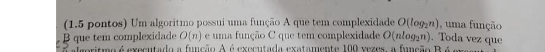
Foto da prova original
💡 Dica rápida Cada função é executada um número de vezes diferente — multiplique cada complexidade pelo número de execuções e some; quem "pesa" mais no total dita a resposta.
I. Dados \(100\cdot O(\log_2 n) + 5\cdot O(n) +
2\cdot O(n\log_2 n)\).
II. Classificação Regra da soma de complexidades: um
número constante de chamadas a uma função \(O(f(n))\) continua sendo \(O(f(n))\) (a constante é absorvida
pela definição de O); a complexidade total do algoritmo é a soma das complexidades, e essa soma é
dominada pelo termo assintoticamente maior.
III. Estratégia \(100\cdot O(\log_2 n)=O(\log_2 n)\);
\(5\cdot O(n)=O(n)\); \(2\cdot O(n\log_2 n)=O(n\log_2 n)\). Comparar o crescimento de \(\log_2 n\), \(n\)
e \(n\log_2 n\): para \(n\) grande, \(\log_2 n \le n \le n\log_2 n\).
IV. Resolução
Soma \(O(\log_2n)+O(n)+O(n\log_2n)\) dominada pelo maior termo, \(n\log_2 n\).
Algoritmo é \(O(n\log_2 n)\).
V. Pontos de atenção
❗ O número de vezes que cada função é chamada (100, 5, 2) é uma
constante e não altera a classe assintótica — multiplicar \(O(n\log_2n)\) por 2 continua
\(O(n\log_2n)\). O erro comum é achar que "a função chamada mais vezes" (A, 100×) domina; o que domina é
quem tem a maior complexidade por chamada.
Ver teoria no Módulo 6 →
No quadro
100·O(log₂n) + 5·O(n) + 2·O(n log₂n)
log₂n ≤ n ≤ n log₂n (n grande)
domina n log₂n → algoritmo é O(n log₂n)
Complexidade do algoritmo: O(n log₂n)
A8. Transitividade de O
(1 ponto) Demonstre que se \(h(n)=O(g(n))\) e \(g(n)=O(f(n))\), então
\(h(n)=O(f(n))\).
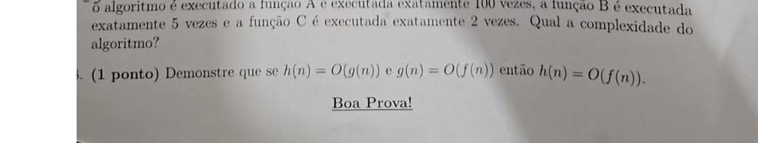
Foto da prova original
💡 Dica rápida É a receita de "encaixar uma desigualdade dentro da outra": troque o termo do meio pela cota que a segunda hipótese te dá.
I. Estratégia Usar a definição formal de O duas vezes
(uma para cada hipótese) e compor as duas desigualdades para obter a definição de \(h=O(f)\).
II. Resolução
\(h(n)=O(g(n))\): \(\exists\,c_1>0,m_1\ge0\): \(h(n)\le c_1g(n)\), \(n\ge m_1\)
\(g(n)=O(f(n))\): \(\exists\,c_2>0,m_2\ge0\): \(g(n)\le c_2f(n)\), \(n\ge m_2\)
\(m=\max(m_1,m_2)\) → para \(n\ge m\), ambas valem:
\(h(n)\le c_1g(n)\le c_1c_2f(n)\)
\(c=c_1c_2>0\) → \(h(n)\le c\,f(n)\), \(n\ge m\) → \(h(n)=O(f(n))\). \(\blacksquare\)
III. Pontos de atenção
❗ É preciso tomar \(m=\max(m_1,m_2)\), não \(m_1\) nem \(m_2\)
isoladamente — a desigualdade só está garantida quando ambas as hipóteses valem ao mesmo tempo.
🔁 Esse é o padrão-modelo de toda prova de propriedade de O/Ω/Θ:
escrever as definições com constantes explícitas, combinar as desigualdades algebricamente, e exibir a
nova constante e o novo \(m\) no final.
Ver teoria no Módulo 6 →
No quadro
h(n) ≤ c₁g(n), n≥m₁
g(n) ≤ c₂f(n), n≥m₂
m = max(m₁,m₂), n≥m: h(n) ≤ c₁g(n) ≤ c₁c₂f(n)
c = c₁c₂ → h(n) = O(f(n)) ∎
Demonstrado: c = c₁c₂, m = max(m₁, m₂).
Versão B
B1. Turma de Programação I (30 CC / 10 SI)
(1 ponto) Na atual turma de Programação I, 30 estudantes são do curso de Ciência
da Computação, enquanto que os outros 10 estudantes são de Sistemas de Informação. Sabe-se que 1/10 dos
estudantes de Ciência da Computação são mulheres e 4/5 dos estudantes de Sistemas de Informação são
homens. Escolhendo aleatoriamente um estudante dessa turma para apresentar um trabalho, qual a
probabilidade desse estudante ser mulher ou um estudante de Ciência da Computação.
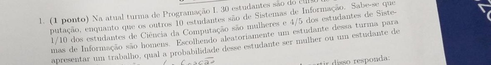
Foto da prova original
💡 Dica rápida Separe o grupo por curso (Ciência da Computação vs. Sistemas de Informação) e depois por gênero dentro de cada curso — a regra do "ou" junta os dois casos sem contar ninguém duas vezes.
I. Dados Turma com 40 estudantes: 30 CC + 10 SI.
CC: \(1/10\) mulheres → 3 mulheres, 27 homens. SI: \(4/5\) homens → 8 homens, 2 mulheres.
II. Classificação Espaço equiprovável finito de 40
estudantes; evento pedido é uma união (mulher OU CC) → inclusão-exclusão.
III. Estratégia \(P(\text{mulher})=7\)? Não — total de
mulheres = 3 (CC) + 2 (SI) = 5. \(P(\text{mulher})=5/40\). \(P(\text{CC})=30/40\).
\(P(\text{mulher}\cap\text{CC})=3/40\) (as 3 mulheres de CC). Aplicar
\(P(M\cup CC)=P(M)+P(CC)-P(M\cap CC)\).
IV. Resolução
\(P(M\cup CC)=\dfrac{5}{40}+\dfrac{30}{40}-\dfrac{3}{40}=\dfrac{32}{40}=\dfrac{4}{5}=80\%\).
V. Pontos de atenção
❗ A interseção "mulher e CC" não é 0 — são justamente as 3 mulheres
de Ciência da Computação; esquecer de subtrair essa interseção (somando 5/40+30/40=35/40) é o erro mais
comum. 🔁 Sempre converta frações de subgrupos ("1/10 das
mulheres de CC") em contagens absolutas antes de montar a fração final sobre o total da turma.
Ver teoria no Módulo 3 →
No quadro
CC=30 (3M,27H) ; SI=10 (2M,8H) ; total=40
P(M) = 5/40 ; P(CC) = 30/40 ; P(M∩CC) = 3/40
P(M∪CC) = 5/40+30/40-3/40 = 32/40 = 4/5 = 80%
P(mulher ou CC) = 4/5 = 80%
B2. Três dados — exatamente dois números iguais
(1 ponto) Três dados são lançados e os resultados anotados. Qual a probabilidade
de se obter exatamente dois números iguais entre os três dados?
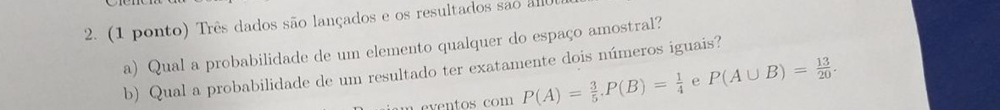
Foto da prova original
💡 Dica rápida "Exatamente dois números iguais" entre 3 dados: escolha QUAIS dois dados serão iguais, o valor que se repete, e o valor do terceiro (diferente) — três escolhas encadeadas.
I. Dados Três dados de 6 faces; \(n(S)=6^3=216\).
II. Classificação Contagem por padrão de repetição
(par + um valor diferente), análogo ao "one pair" com dados.
III. Estratégia Escolher o valor do par: 6 formas.
Escolher quais 2 das 3 posições formam o par: \(\binom{3}{2}=3\). Escolher o valor do terceiro dado,
diferente do par: 5 formas restantes.
IV. Resolução
Casos favoráveis \(=6\times3\times5=90\).
\(P=90/216=5/12\approx41,67\%\).
V. Pontos de atenção
❗ "Exatamente dois iguais" exclui o caso dos três iguais (que teria
apenas 6 casos, \(6/216=1/36\)) — não incluir esse caso no meio da contagem por engano.
🔁 Padrão de contagem: (valor do grupo repetido) × (posições do
grupo) × (valor(es) restante(s) distinto(s)).
Ver teoria no Módulo 2 →
No quadro
n(S) = 216
6 (valor do par) × C(3,2)=3 (posições) × 5 (terceiro valor) = 90
P = 90/216 = 5/12 ≈ 41,67%
P(exatamente dois iguais) = 5/12 ≈ 41,67%
B3. \(P(A)=\tfrac35\), \(P(B)=\tfrac14\), \(P(A\cup B)=\tfrac{13}{20}\)
(2 pontos) Suponha que A e B sejam eventos com \(P(A)=3/5\), \(P(B)=1/4\) e
\(P(A\cup B)=13/20\). Determine: a) Probabilidade que A não ocorra; b) Probabilidade que A e B ocorram;
c) Probabilidade que nem A e nem B ocorra; d) A e B são independentes? Justifique.
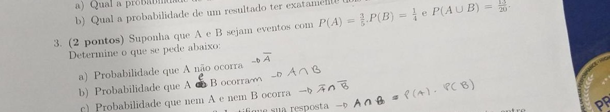
Foto da prova original
💡 Dica rápida Aqui os três números (P(A), P(B), P(A∪B)) já estão prontos — encaixe direto nas fórmulas de complemento e interseção, sem precisar contar elementos de conjunto.
I. Estratégia a) complemento direto; b) isolar
\(P(A\cap B)\) de \(P(A\cup B)=P(A)+P(B)-P(A\cap B)\); c) De Morgan; d) comparar \(P(A\cap B)\) com
\(P(A)P(B)\) — cada item usa diretamente a identidade algébrica que isola a quantidade pedida a partir dos três dados fornecidos, sem precisar de espaço amostral explícito.
II. Resolução
a) \(P(\bar A)=1-3/5=2/5\).
b) \(P(A\cap B)=P(A)+P(B)-P(A\cup B)=\tfrac{12}{20}+\tfrac{5}{20}-\tfrac{13}{20}=\tfrac{4}{20}=\tfrac15\).
c) \(P(\bar A\cap\bar B)=1-P(A\cup B)=1-13/20=7/20\).
d) \(P(A)P(B)=\tfrac35\cdot\tfrac14=\tfrac{3}{20}\); \(P(A\cap B)=\tfrac15=\tfrac{4}{20}\ne\tfrac{3}{20}\)
— não são independentes.
III. Pontos de atenção
❗ É tentador achar que, como todos os números "batem bonito", A e B
são independentes — sempre confira numericamente \(P(A\cap B)\) contra \(P(A)P(B)\), não "no olho".
🔁 Trabalhar com denominador comum 20 evita erro de fração ao
longo de toda a questão.
Ver teoria no Módulo 3 →
No quadro
a) P(Ā) = 1-3/5 = 2/5 = 40%
b) P(A∩B) = 12/20+5/20-13/20 = 4/20 = 1/5 = 20%
c) P(nem) = 1-13/20 = 7/20 = 35%
d) P(A)P(B) = 3/20 ≠ P(A∩B) = 4/20 → independentes: NÃO
a) 2/5 b) 1/5 c) 7/20 d) Não são independentes.
B4. Comissão de 3 professores, Dayan não escolhido
(1 ponto) Uma comissão é formada por três professores, escolhidos aleatoriamente
entre Antônio, Bruno, Clayton, Dayan e Edmar. Sabe-se que Dayan não foi um dos escolhidos para a
comissão. Qual a probabilidade de Bruno estar na comissão?
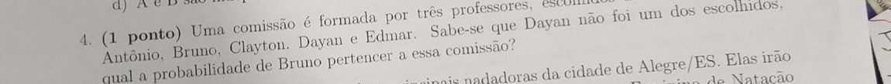
Foto da prova original
💡 Dica rápida "Sabendo que Dayan não foi escolhido" encolhe o grupo de candidatos — refaça a contagem só com quem sobrou.
I. Dados 5 professores; comissão de 3, escolhida ao
acaso; condição: Dayan (D) não está na comissão.
II. Classificação Probabilidade condicional com espaço
amostral reduzido a combinações — condicionar em "D ∉ comissão" restringe as comissões possíveis às
formadas pelos 4 professores restantes.
III. Estratégia Sem a condição, \(n(S)=\binom{5}{3}=10\)
comissões, igualmente prováveis. Condicionando em "D não escolhido", o novo espaço amostral são as
comissões de 3 formadas só com {Antônio, Bruno, Clayton, Edmar}: \(\binom{4}{3}=4\) comissões, igualmente
prováveis entre si. Contar quantas dessas 4 incluem Bruno: fixar Bruno e escolher 2 dos 3 restantes
(Antônio, Clayton, Edmar): \(\binom{3}{2}=3\).
IV. Resolução
D excluído → sobram Antônio (A), Bruno (B), Clayton (C), Edmar (E); comissões de 3 dentre esses 4:
{A,B,C}, {A,B,E}, {A,C,E}, {B,C,E} → 4 comissões, \(n(S')=4\)
contêm Bruno: {A,B,C}, {A,B,E}, {B,C,E} → 3 favoráveis
\(P(\text{Bruno}\mid D\notin\text{comissão})=\dfrac{3}{4}=75\%\).
V. Pontos de atenção
❗ Depois de condicionar, o denominador correto é 4 (comissões
possíveis sem Dayan), não 10 (total sem condicionar) — usar o espaço amostral original ignorando a
informação dada é o erro mais frequente em probabilidade condicional.
Ver teoria no Módulo 4 →
No quadro
C(5,3) = 10 (sem condição)
D∉comissão → C(4,3) = 4 comissões possíveis
Bruno incluído: C(3,2) = 3
P(Bruno | D∉) = 3/4 = 75%
P(Bruno na comissão | Dayan não escolhido) = 3/4 = 75%
B5. Juliana e Valéria — duas provas de natação
(1 ponto) Juliana e Valéria são as duas principais nadadoras da cidade de
Alegre/ES. Elas irão competir com outras nadadoras em 2 provas do Primeiro Campeonato Feminino de
Natação Alegrense. A probabilidade de Juliana ganhar uma prova é 40%, já a probabilidade de Valéria
ganhar uma prova é 30%. a) Determine o espaço amostral e a probabilidade de cada elemento; b) Ache a
probabilidade de pelo menos uma das provas ter sido ganha pela Juliana ou Valéria.
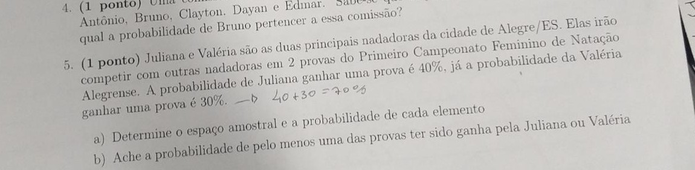
Foto da prova original
💡 Dica rápida "Pelo menos uma das duas provas ganha" = 1 menos a chance de perder as duas (multiplicando as chances de perda de cada uma, pois são independentes).
I. Dados Por prova: \(P(J)=0,4\), \(P(V)=0,3\),
logo \(P(\text{outra nadadora}, O)=1-0,4-0,3=0,3\). Duas provas, resultados independentes entre si.
II. Classificação Espaço produto de duas tentativas
independentes, cada uma com 3 resultados não equiprováveis (\(J,V,O\)).
III. Estratégia (a)
\(S=\{J,V,O\}\times\{J,V,O\}\), 9 pares ordenados (prova 1, prova 2); a probabilidade de cada par é o
produto das probabilidades individuais, por independência.
IV. Resolução (a)
(J,J)=0,16 ; (J,V)=(V,J)=(J,O)=(O,J)=0,12 ; (V,V)=(V,O)=(O,V)=(O,O)=0,09
Soma \(=0,16+4(0,12)+4(0,09)=0,16+0,48+0,36=1\) ✓.
V. Estratégia (b) "Pelo menos uma prova ganha por
Juliana ou Valéria" é o complemento de "nenhuma das duas venceu nenhuma prova", isto é, complemento de
(O,O).
VI. Resolução (b)
\(P(\text{pelo menos uma}) = 1-P(O,O)=1-0,09=0,91=91\%\).
VII. Pontos de atenção
❗ As 9 células do espaço amostral não são
equiprováveis (\(P(J)\ne P(V)\ne P(O)\)) — não dividir por 9 no item b). 🔁 "Pelo menos um evento X em n tentativas" quase sempre é mais rápido via
complemento "nenhuma vez X".
Ver teoria no Módulo 5 →
No quadro
P(J)=0,4 ; P(V)=0,3 ; P(O)=0,3
S = {J,V,O}² , 9 pares, probabilidades = produto
P(O,O) = 0,3·0,3 = 0,09
P(≥1 vitória J/V) = 1-0,09 = 0,91 = 91%
a) 9 pares com probabilidades de 0,09 a 0,16 (soma 1) b) 0,91 = 91%
B6. Prove o seguinte (O, Ω, Θ)
(1,5 ponto) Prove o seguinte: a) \(3n^3-2n^2+1\) é \(O(n^3)\); b) \(4n^2+3n+2\)
é \(\Omega(n^2)\); c) \(\dfrac{n+4}{3}\) é \(\Theta(n)\).
Foto da prova original
💡 Dica rápida Mesmo padrão de sempre: para O, majore cada termo pequeno pela maior potência; para Ω, descarte os termos positivos que só ajudam.
I. Resolução a) \(O(n^3)\)
\(n\ge1\): \(3n^3-2n^2+1\le3n^3+1\) (descarta \(-2n^2\), negativo)
\(\le3n^3+n^3=4n^3\) (pois \(1\le n^3\))
→ \(c=4\), \(m=1\) ✓ \(O(n^3)\).
II. Resolução b) \(\Omega(n^2)\)
\(n\ge0\): \(4n^2+3n+2\ge4n^2\) (pois \(3n+2\ge0\))
→ \(c=4\), \(m=0\) ✓ \(\Omega(n^2)\).
III. Resolução c) \(\Theta(n)\)
Cota sup. (\(n\ge1\)): \(\dfrac{n+4}{3}\le\dfrac{n+4n}{3}=\dfrac{5n}{3}\) (pois \(4\le4n\)) → \(c_1=5/3\)
Cota inf. (\(n\ge0\)): \(\dfrac{n+4}{3}\ge\dfrac{n}{3}\) → \(c_2=1/3\)
→ \(m=1\): \(\tfrac13 n\le\dfrac{n+4}{3}\le\tfrac53 n\) ✓ \(\Theta(n)\).
IV. Pontos de atenção
❗ Em (a), o termo \(-2n^2\) é negativo e por isso só torna a
expressão menor — pode ser simplesmente descartado ao majorar (não precisa ser "coberto" por
outro termo, diferente do termo positivo \(+1\)). 🔁 O mesmo
padrão algébrico de A6 se repete aqui, só troca as constantes.
Ver teoria no Módulo 6 →
No quadro
a) 3n³-2n²+1 ≤ 3n³+1 ≤ 4n³ (n≥1) → c=4, m=1 → O(n³)
b) 4n²+3n+2 ≥ 4n² (n≥0) → c=4, m=0 → Ω(n²)
c) n/3 ≤ (n+4)/3 ≤ 5n/3 (n≥1) → c₁=1/3, c₂=5/3, m=1 → Θ(n)
a) O(n³) com c=4, m=1 b) Ω(n²) com c=4, m=0 c) Θ(n) com c₁=1/3, c₂=5/3, m=1
B7. Algoritmo com funções A, B, C
(1,5 ponto) Um algoritmo possui uma função A que tem complexidade \(O(n^2)\), uma
função B que tem complexidade \(O(n)\) e uma função C que tem complexidade \(O(n\log_2 n)\). Toda vez
que o algoritmo é executado, a função A é executada exatamente uma vez, a função B é executada
exatamente 5 vezes e a função C é executada exatamente 2 vezes. Qual a complexidade do algoritmo?
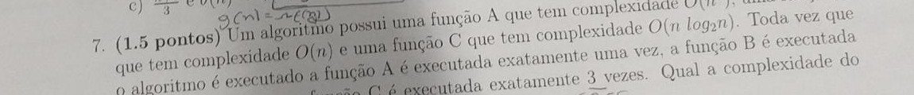
Foto da prova original
💡 Dica rápida Multiplique cada complexidade pelo número de vezes que a função roda, some tudo, e o termo que mais pesa dita a complexidade final.
I. Dados \(1\cdot O(n^2) + 5\cdot O(n) + 2\cdot
O(n\log_2 n)\) — atenção: aqui é A, não B ou C, quem tem o maior expoente, o oposto do padrão da versão A7.
II. Estratégia Cada termo, multiplicado por uma
constante, permanece na mesma classe: \(O(n^2)\), \(O(n)\), \(O(n\log_2n)\). Comparar crescimento:
para \(n\) grande, \(n \le n\log_2n \le n^2\) (a partir de \(n\ge4\), \(\log_2n\le n\), e \(n^2\) sempre
cresce mais rápido que \(n\log_2n\)).
III. Resolução
Termo dominante: \(n^2\) (de A), mesmo executada 1 vez — importa complexidade por chamada, não o nº de chamadas.
Algoritmo é \(O(n^2)\).
IV. Pontos de atenção
❗ Diferente da versão A (onde B/C dominavam), aqui é A — mesmo
executada uma única vez — que domina, porque \(n^2\) cresce mais rápido que \(n\log_2n\). Não deduzir a
resposta "de cabeça" olhando quem é chamada mais vezes; sempre compare as funções de crescimento.
Ver teoria no Módulo 6 →
No quadro
1·O(n²) + 5·O(n) + 2·O(n log₂n)
n ≤ n log₂n ≤ n² (n grande)
domina n² → algoritmo é O(n²)
Complexidade do algoritmo: O(n²)
B8. Transitividade de O
(1 ponto) Demonstre que se \(h(n)=O(g(n))\) e \(g(n)=O(f(n))\), então
\(h(n)=O(f(n))\).
Foto da prova original
💡 Dica rápida Prova de transitividade: encadeie as duas desigualdades dadas, uma dentro da outra, e multiplique as constantes.
I. Resolução (idêntica à A8)
\(h(n)\le c_1g(n)\), \(n\ge m_1\) ; \(g(n)\le c_2f(n)\), \(n\ge m_2\)
\(m=\max(m_1,m_2)\), \(c=c_1c_2\) → \(h(n)\le c_1g(n)\le c\,f(n)\)
\(h(n)=O(f(n))\). \(\blacksquare\)
II. Pontos de atenção
❗ Mesmo cuidado da versão A: usar \(m=\max(m_1,m_2)\), nunca um dos
dois isoladamente. 🔁 A transitividade de O é o que garante que
"está em O de alguma função polinomial/log/etc." forma uma hierarquia consistente de comparação entre
algoritmos.
Ver teoria no Módulo 6 →
No quadro
h(n) ≤ c₁g(n), n≥m₁ ; g(n) ≤ c₂f(n), n≥m₂
m=max(m₁,m₂) → h(n) ≤ c₁c₂f(n) → c=c₁c₂ → h(n)=O(f(n)) ∎
Demonstrado: c = c₁c₂, m = max(m₁, m₂).
Versão C
C1. Turma de Programação I (30 CC / 20 SI)
(1 ponto) Na atual turma de Programação I, 30 estudantes são do curso de Ciência
da Computação, enquanto que os outros 20 estudantes são de Sistemas de Informação. Sabe-se que 1/10 dos
estudantes de Ciência da Computação são mulheres e 4/5 dos estudantes de Sistemas de Informação são
homens. Escolhendo aleatoriamente um estudante dessa turma para apresentar um trabalho, qual a
probabilidade desse estudante ser mulher ou um estudante de Ciência da Computação.
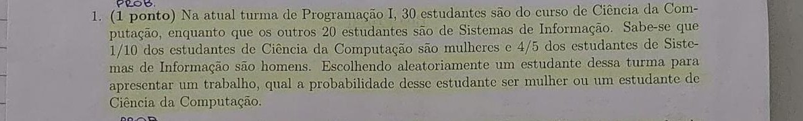
Foto da prova original
💡 Dica rápida Mesmo tipo da B1 — separe por curso e por gênero, depois use a regra do "ou" (soma menos a parte repetida).
I. Dados Turma com 50 estudantes: 30 CC + 20 SI.
CC: \(1/10\) mulheres → 3 mulheres, 27 homens. SI: \(4/5\) homens → 16 homens, 4 mulheres.
II. Estratégia Total de mulheres = 3+4 = 7.
\(P(M)=7/50\), \(P(CC)=30/50\), \(P(M\cap CC)=3/50\) (mulheres de CC) — como "mulher" e "CC" se sobrepõem (mulheres de CC), a soma direta contaria essa interseção duas vezes, exigindo inclusão-exclusão.
III. Resolução
\(P(M\cup CC)=\dfrac{7}{50}+\dfrac{30}{50}-\dfrac{3}{50}=\dfrac{34}{50}=\dfrac{17}{25}=68\%\).
IV. Pontos de atenção
❗ Mesma armadilha de B1: o total de estudantes muda (50, não 40)
porque SI tem 20 alunos nesta versão — recalcular do zero, não reaproveitar números de outra versão.
🔁 Mesma estrutura de B1: converter frações de subgrupo em
contagem absoluta antes de aplicar inclusão-exclusão.
Ver teoria no Módulo 3 →
No quadro
CC=30 (3M,27H) ; SI=20 (4M,16H) ; total=50
P(M) = 7/50 ; P(CC) = 30/50 ; P(M∩CC) = 3/50
P(M∪CC) = 7/50+30/50-3/50 = 34/50 = 17/25 = 68%
P(mulher ou CC) = 17/25 = 68%
C2. Baralho comum — duas cartas do mesmo tipo
(1 ponto) Em um baralho comum (52 cartas), cada naipe tem 13 cartas (9 cartas
numeradas de 2 a 10, 1 carta de ás, 3 cartas de figuras: Valete, Dama e Rei). Serão escolhidas
aleatoriamente duas cartas (sem reposição) desse baralho. a) Qual a probabilidade de um elemento
qualquer do espaço amostral? b) Qual a probabilidade de um resultado ter as duas cartas do mesmo tipo
(mesmo número, mesma figura ou ambas serem ases)?
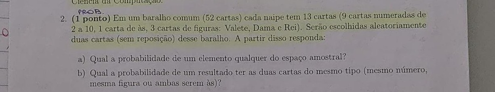
Foto da prova original
💡 Dica rápida "Mesmo tipo" pode ser mesmo número, mesma figura, ou as duas serem ás — conte cada categoria separadamente antes de somar.
I. Dados 52 cartas: 36 numeradas (9×4 naipes), 4 ases,
12 figuras (3×4 naipes). Escolha sem reposição, sem ordem: \(n(S)=\binom{52}{2}=1326\).
II. Classificação a) espaço equiprovável — cada mão de
2 cartas é igualmente provável. b) evento "mesmo tipo" = união disjunta de três categorias
(numerada+numerada, ás+ás, figura+figura) — a leitura do enunciado indica "mesmo tipo" como categoria,
não necessariamente mesmo número.
III. Estratégia a) \(1/n(S)\). b) somar
\(\binom{36}{2}+\binom{4}{2}+\binom{12}{2}\) (categorias mutuamente excludentes, não há sobreposição
entre "numerada", "ás" e "figura") e dividir por \(n(S)\).
IV. Resolução
a) \(P=1/1326\).
b) \(\binom{36}{2}=630\), \(\binom{4}{2}=6\), \(\binom{12}{2}=66\); soma \(=702\).
\(P=\dfrac{702}{1326}=\dfrac{117}{221}=\dfrac{9}{17}\approx52,94\%\).
V. Pontos de atenção
❗ As três categorias (numerada, ás, figura) são disjuntas — basta
somar as combinações de cada uma, sem inclusão-exclusão. O erro comum é interpretar "mesmo tipo" como
"mesmo número exato" (ex.: duas cartas "7"), o que daria uma resposta bem menor
(\(13\binom{4}{2}/1326=78/1326=1/17\)) — releia o enunciado: aqui "tipo" agrupa por categoria (numerada/ás/figura), não por valor exato.
Ver teoria no Módulo 2 →
No quadro
n(S) = C(52,2) = 1326
a) P = 1/1326
b) C(36,2)+C(4,2)+C(12,2) = 630+6+66 = 702
P = 702/1326 = 9/17 ≈ 52,94%
a) 1/1326 b) 9/17 ≈ 52,94%
C3. \(P(A)=\tfrac25\), \(P(B)=\tfrac16\), \(P(A\cup B)=\tfrac{5}{12}\)
(2 pontos) Suponha que A e B sejam eventos com \(P(A)=2/5\), \(P(B)=1/6\) e
\(P(A\cup B)=5/12\). Determine: a) Probabilidade que A não ocorra; b) Probabilidade que A e B ocorram;
c) Probabilidade que nem A e nem B ocorra; d) A e B são independentes? Justifique.
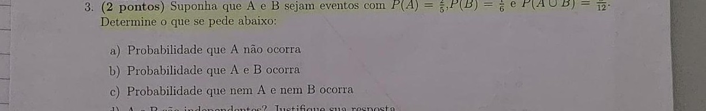
Foto da prova original
💡 Dica rápida Três números prontos de novo: aplique direto as fórmulas de complemento (\(1-P\)) e da regra do "ou" isolando a interseção.
I. Resolução (LCD = 60)
a) \(P(\bar A)=1-2/5=3/5\).
b) \(P(A\cap B)=\tfrac{24}{60}+\tfrac{10}{60}-\tfrac{25}{60}=\tfrac{9}{60}=\tfrac{3}{20}\).
c) \(P(\bar A\cap\bar B)=1-5/12=7/12\).
d) \(P(A)P(B)=\tfrac25\cdot\tfrac16=\tfrac{2}{30}=\tfrac{1}{15}=\tfrac{4}{60}\); \(P(A\cap
B)=\tfrac{9}{60}\ne\tfrac{4}{60}\) — não são independentes.
II. Pontos de atenção
❗ Denominador comum de 5, 6 e 12 é 60, não 30 — usar um LCD errado
é a fonte mais comum de erro numérico nesta questão em todas as versões.
Ver teoria no Módulo 3 →
No quadro
a) P(Ā) = 1-2/5 = 3/5 = 60%
b) P(A∩B) = 24/60+10/60-25/60 = 9/60 = 3/20 = 15%
c) P(nem) = 1-5/12 = 7/12 ≈ 58,33%
d) P(A)P(B) = 4/60 ≠ P(A∩B) = 9/60 → independentes: NÃO
a) 3/5 b) 3/20 c) 7/12 d) Não são independentes.
C4. Banda de 32 pessoas — saxofone e trompete
(1 ponto) A famosa Banda Lira Carlos Gomes de Alegre/ES é composta por 32
pessoas, sendo metade delas homens e a outra metade mulheres. Infelizmente os integrantes da banda
tocam apenas dois tipos de instrumentos: Saxofone e Trompete. Entre os homens, 5/8 deles tocam
Saxofone, já entre as mulheres 5/8 delas tocam Trompete. Uma emissora de TV selecionou aleatoriamente um
integrante da banda para conceder uma entrevista. Sabe-se que o(a) escolhido(a) toca Saxofone. Qual a
probabilidade então que seja mulher?
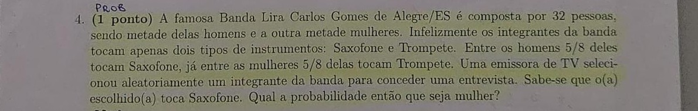
Foto da prova original
💡 Dica rápida Cuidado com qual fração é de quem: a fração dada para as mulheres é de TROMPETE, não de saxofone — o grupo de saxofonistas mulheres é o complementar dessa fração.
I. Dados 16 homens, 16 mulheres. Homens: \(5/8\)
tocam sax → 10 sax, 6 trompete. Mulheres: \(5/8\) tocam trompete → 10 trompete, 6 sax.
II. Classificação Probabilidade condicional; espaço
reduzido aos que tocam saxofone.
III. Estratégia Total de saxofonistas = homens-sax +
mulheres-sax = \(10+6=16\). Dentro desse grupo, contar quantas são mulheres.
IV. Resolução
\(P(\text{mulher}\mid\text{sax})=\dfrac{6}{16}=\dfrac{3}{8}=37,5\%\).
V. Pontos de atenção
❗ A fração \(5/8\) dada para as mulheres é de quem toca
trompete, não saxofone — as mulheres saxofonistas são o complemento, \(3/8\) de 16 = 6, não
\(5/8\) de 16. Trocar essa fração é o erro mais comum da questão.
🔁 \(P(\text{mulher}\mid\text{sax}) =
\dfrac{n(\text{mulher}\cap\text{sax})}{n(\text{sax})}\) — contar direto no espaço reduzido evita erro de
fórmula.
Ver teoria no Módulo 4 →
No quadro
H=16 (10 sax, 6 tromp) ; M=16 (6 sax, 10 tromp)
sax total = 10+6 = 16
P(M | sax) = 6/16 = 3/8 = 37,5%
P(mulher | toca saxofone) = 3/8 = 37,5%
C5. Erick e André — duas provas de natação
(1 ponto) Erick e André são os dois principais nadadores da cidade de Alegre/ES.
Eles irão competir com outros nadadores em 2 provas do Primeiro Campeonato Masculino de Natação
Alegrense. A probabilidade de Erick ganhar uma prova é 50%, já a probabilidade do André ganhar uma prova
é 30%. a) Determine o espaço amostral e a probabilidade de cada elemento; b) Ache a probabilidade de
pelo menos uma das provas ter sido ganha pelo Erick ou pelo André.
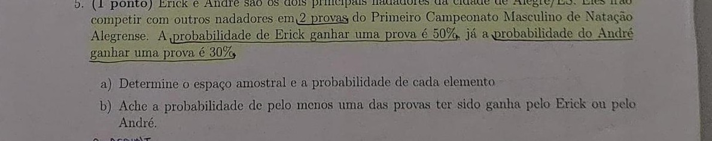
Foto da prova original
💡 Dica rápida "Pelo menos uma prova ganha" = 1 menos a chance de perder as duas provas (multiplicando as chances de perda, pois são independentes).
I. Dados Por prova: \(P(E)=0,5\), \(P(A)=0,3\),
\(P(\text{outro},O)=1-0,5-0,3=0,2\). 2 provas independentes — como em B5, o terceiro resultado (O) precisa ser calculado por complemento, pois só duas probabilidades são dadas diretamente.
II. Resolução (a) \(S=\{E,A,O\}^2\), 9 pares:
(E,E)=0,25 ; (E,A)=(A,E)=0,15 ; (E,O)=(O,E)=0,10 ; (A,A)=0,09 ; (A,O)=(O,A)=0,06 ; (O,O)=0,04
Soma \(=0,25+0,15\cdot2+0,10\cdot2+0,09+0,06\cdot2+0,04=1\) ✓.
III. Resolução (b)
\(P(\text{pelo menos uma})=1-P(O,O)=1-0,04=0,96=96\%\).
IV. Pontos de atenção
❗ Igual à B5: os 9 pares não são equiprováveis; usar o complemento
de "(O,O) nas duas provas", não de "Erick ou André perde uma prova" isoladamente.
Ver teoria no Módulo 5 →
No quadro
P(E)=0,5 ; P(A)=0,3 ; P(O)=0,2
P(O,O) = 0,2² = 0,04
P(≥1 vitória E/A) = 1-0,04 = 0,96 = 96%
a) 9 pares com probabilidades de 0,04 a 0,25 (soma 1) b) 0,96 = 96%
C6. Prove o seguinte (O, Ω, Θ)
(1,5 ponto) Prove o seguinte: a) \(3n^3-4n+2\) é \(O(n^3)\); b) \(2n^2+3n+5\) é
\(\Omega(n^2)\); c) \(\dfrac{2n+1}{3}\) é \(\Theta(n)\).
Foto da prova original
💡 Dica rápida Sempre o mesmo padrão: O é teto (majorar termos pequenos), Ω é chão (descartar termos positivos extras).
I. Resolução a) \(O(n^3)\) (idêntico à A6a)
\(n\ge1\): \(3n^3-4n+2\le3n^3+2\le3n^3+2n^3=5n^3\)
→ \(c=5\), \(m=1\) ✓ \(O(n^3)\).
II. Resolução b) \(\Omega(n^2)\)
\(n\ge0\): \(2n^2+3n+5\ge2n^2\) (pois \(3n+5\ge0\))
→ \(c=2\), \(m=0\) ✓ \(\Omega(n^2)\).
III. Resolução c) \(\Theta(n)\)
Cota sup. (\(n\ge1\)): \(\dfrac{2n+1}{3}\le\dfrac{2n+n}{3}=n\) (pois \(1\le n\)) → \(c_1=1\)
Cota inf. (\(n\ge0\)): \(\dfrac{2n+1}{3}\ge\dfrac{2n}{3}\) → \(c_2=2/3\)
→ \(m=1\): \(\tfrac23n\le\dfrac{2n+1}{3}\le n\) ✓ \(\Theta(n)\).
IV. Pontos de atenção
❗ O coeficiente 2 de \(2n\) no numerador de (c) muda as constantes
\(c_1,c_2\) em relação a A6c/B6c — não copiar as constantes de outra versão sem refazer a conta.
Ver teoria no Módulo 6 →
No quadro
a) 3n³-4n+2 ≤ 5n³ (n≥1) → c=5, m=1 → O(n³)
b) 2n²+3n+5 ≥ 2n² (n≥0) → c=2, m=0 → Ω(n²)
c) 2n/3 ≤ (2n+1)/3 ≤ n (n≥1) → c₁=2/3, c₂=1, m=1 → Θ(n)
a) O(n³) com c=5, m=1 b) Ω(n²) com c=2, m=0 c) Θ(n) com c₁=2/3, c₂=1, m=1
C7. Algoritmo com funções A, B, C
(1,5 ponto) Um algoritmo possui uma função A que tem complexidade \(O(n^2)\), uma
função B que tem complexidade \(O(\log_2 n)\) e uma função C que tem complexidade \(O(n)\). Toda vez que
o algoritmo é executado, a função A é executada exatamente uma vez, a função B é executada exatamente 3
vezes e a função C é executada exatamente 10 vezes. Qual a complexidade do algoritmo?
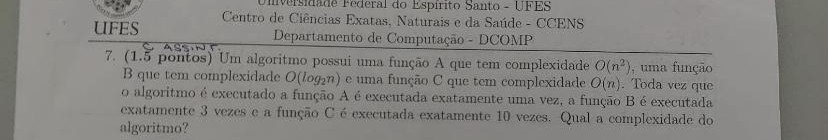
Foto da prova original
💡 Dica rápida Multiplique cada complexidade pelo número de execuções, some, e o maior termo dita a complexidade total do algoritmo.
I. Dados \(1\cdot O(n^2) + 3\cdot O(\log_2n) +
10\cdot O(n)\).
II. Estratégia Constantes de repetição não mudam a
classe: \(O(n^2)\), \(O(\log_2n)\), \(O(n)\). Comparar: \(\log_2n \le n \le n^2\) para \(n\) grande.
III. Resolução
Termo dominante: \(n^2\) (de A), assim como em B7.
Algoritmo é \(O(n^2)\).
IV. Pontos de atenção
❗ As 10 execuções de C (\(O(n)\)) não superam a única execução de A
(\(O(n^2)\)) assintoticamente — \(10n\) é \(O(n)\), que cresce mais devagar que \(n^2\) para \(n\)
suficientemente grande, mesmo com a constante 10 na frente.
Ver teoria no Módulo 6 →
No quadro
1·O(n²) + 3·O(log₂n) + 10·O(n)
log₂n ≤ n ≤ n² (n grande)
domina n² → algoritmo é O(n²)
Complexidade do algoritmo: O(n²)
C8. Soma de duas funções O(f(n))
(1 ponto) Demonstre que se \(h(n)=O(f(n))\) e \(g(n)=O(f(n))\), então
\(h(n)+g(n)=O(f(n))\).
Foto da prova original
💡 Dica rápida Diferente da transitividade (A8/B8): aqui as duas cotas são para a MESMA função de referência, então elas se SOMAM (constante final = soma das duas, não produto).
I. Estratégia Usar a definição de O para cada
hipótese separadamente e somar as duas desigualdades — como as duas cotas se referem à mesma função \(f(n)\), somá-las é o caminho natural para cotar a soma \(h(n)+g(n)\).
II. Resolução
\(\exists\,c_1>0,m_1\ge0\): \(h(n)\le c_1f(n)\), \(n\ge m_1\)
\(\exists\,c_2>0,m_2\ge0\): \(g(n)\le c_2f(n)\), \(n\ge m_2\)
\(m=\max(m_1,m_2)\) → para \(n\ge m\), soma as desigualdades:
\(h(n)+g(n)\le c_1f(n)+c_2f(n)=(c_1+c_2)f(n)\)
\(c=c_1+c_2>0\) → \(h(n)+g(n)\le c\,f(n)\) → \(h(n)+g(n)=O(f(n))\). \(\blacksquare\)
III. Pontos de atenção
❗ Diferente da transitividade (A8/B8), aqui as duas hipóteses são
cotas para \(f(n)\) — a mesma função — e por isso se somam (\(c=c_1+c_2\)); na transitividade as
cotas se compõem/multiplicam (\(c=c_1c_2\)) porque uma cota é para \(g\) em função de \(f\), e a
outra para \(h\) em função de \(g\). Confundir esses dois padrões de prova é comum quando as duas
aparecem na mesma prova (como em A8 e C8).
Ver teoria no Módulo 6 →
No quadro
h(n) ≤ c₁f(n), n≥m₁ ; g(n) ≤ c₂f(n), n≥m₂
m=max(m₁,m₂) → h(n)+g(n) ≤ (c₁+c₂)f(n) → c=c₁+c₂ → h+g=O(f(n)) ∎
Demonstrado: c = c₁+c₂, m = max(m₁, m₂).